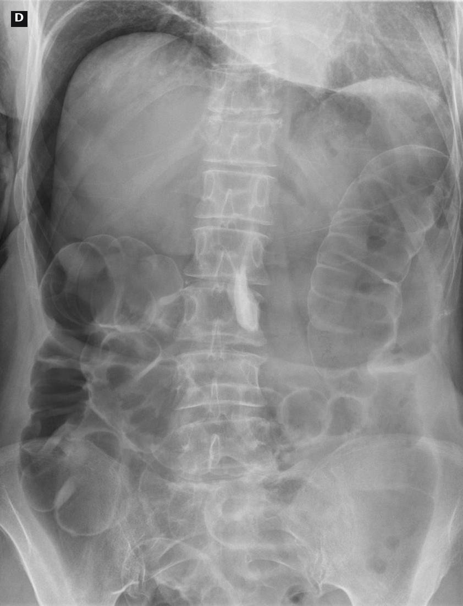
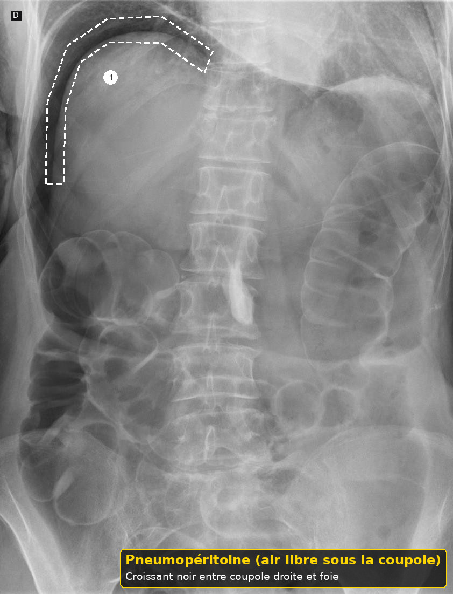
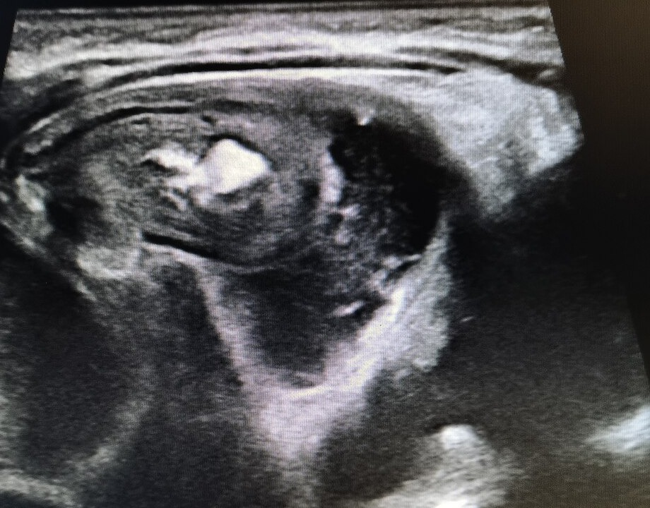
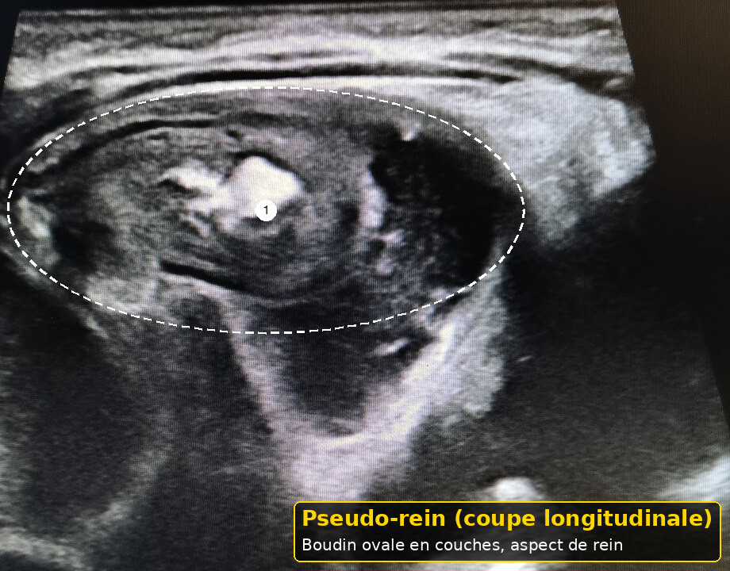

Invagination intestinale
Taille : mesurée par le script du dépôt.
L'essentiel
Invagination intestinale : les critères, les signes d'alarme et les doses lues sont dans les fenêtres.
1. Définition
Le détail est dans la fenêtre.
L'invagination est l'entrée d'un segment d'intestin dans le segment d'aval.7
Elle peut occlure, ischémier, nécroser et perforer.7
Le guide britannique de 2017 la tient pour la cause unique la plus fréquente d'urgence chirurgicale abdominale du nourrisson.7
Le cri est souvent par vagues, avec pâleur entre les vagues.7
Ce n'est pas une colique du soir répétée depuis des semaines.7
À l'arrivée, pour Invagination intestinale, on demande le rythme par vagues.
À l'arrivée, pour Invagination intestinale, on antalgie avant le geste.
À l'arrivée, pour Invagination intestinale, on n'écrit pas colique à 9 mois.
Après le déshabillage, pour Invagination intestinale, on n'essaie pas le lavement si le ventre est péritonéal.
Après le déshabillage, pour Invagination intestinale, on prévient les parents du risque de bloc.
Avant l'ordonnance, pour Invagination intestinale, on ne remplace pas l'image par un antispasmodique.
Avant l'ordonnance, pour Invagination intestinale, on examine les aines pour ne pas manquer une hernie.
Si le cri persiste, pour Invagination intestinale, on cherche la cible en transversal.
Si le cri persiste, pour Invagination intestinale, on réanime avant la sédation.
Avant le retour à domicile, pour Invagination intestinale, on appelle l'échographiste.
Avant le retour à domicile, pour Invagination intestinale, on cite la sensibilité lue sans en faire une garantie locale.
Quand la famille rappelle, pour Invagination intestinale, on laisse à jeun.
Quand la famille rappelle, pour Invagination intestinale, on ne confond pas avec une gastroentérite qui joue entre les selles.
Dans le compte rendu, pour Invagination intestinale, on regarde la couche sans attendre le sang.
Dans le compte rendu, pour Invagination intestinale, on explique les signes de récidive.
Si un signe nouveau apparaît, pour Invagination intestinale, on demande le rythme par vagues.
Si un signe nouveau apparaît, pour Invagination intestinale, on antalgie avant le geste.
Si un signe nouveau apparaît, pour Invagination intestinale, on n'écrit pas colique à 9 mois.
À la visite de contrôle, pour Invagination intestinale, on n'essaie pas le lavement si le ventre est péritonéal.
À la visite de contrôle, pour Invagination intestinale, on prévient les parents du risque de bloc.
Devant les deux parents, pour Invagination intestinale, on ne remplace pas l'image par un antispasmodique.
Devant les deux parents, pour Invagination intestinale, on examine les aines pour ne pas manquer une hernie.
2. Épidémiologie
Le détail est dans la fenêtre.
Le texte de 2017 dit le caractère idiopathique dans 90 pour cent des cas.7
Le pic lu va de 6 à 18 mois.7
Avant et après ce pic, un point d'appel anatomique devient plus plausible.7
Les garçons sont décrits comme plus souvent atteints, sans taux suisse ici.7
Un audit national cité trouve un taux de réduction de 71 pour cent, et une étude de 2012 un taux de 61 pour cent.7
À l'arrivée, pour Invagination intestinale, on note la pâleur entre les vagues.
À l'arrivée, pour Invagination intestinale, on surveille après la réduction.
À l'arrivée, pour Invagination intestinale, on groupe le sang avant le transfert.
Après le déshabillage, pour Invagination intestinale, on n'essaie pas le lavement si l'air libre est suspecté.
Après le déshabillage, pour Invagination intestinale, on revit l'enfant une heure après si l'image est négative et le doute reste.
Avant l'ordonnance, pour Invagination intestinale, on réduit par l'air seulement si l'enfant est stable.
Avant l'ordonnance, pour Invagination intestinale, on ne donne pas à boire pour calmer.
Si le cri persiste, pour Invagination intestinale, on cherche le pseudo-rein en longitudinal.
Si le cri persiste, pour Invagination intestinale, on note l'heure de début des vagues.
Avant le retour à domicile, pour Invagination intestinale, on appelle le chirurgien.
Avant le retour à domicile, pour Invagination intestinale, on documente le Doppler sans en faire un interdit absolu.
Quand la famille rappelle, pour Invagination intestinale, on pose une voie si l'enfant est pâle.
Quand la famille rappelle, pour Invagination intestinale, on ne confond pas avec un volvulus, qui n'a pas de lavement à l'air.
Dans le compte rendu, pour Invagination intestinale, on palpe entre les crises.
Dans le compte rendu, pour Invagination intestinale, on pense à un point d'appel hors du pic de 6 à 18 mois.
Si un signe nouveau apparaît, pour Invagination intestinale, on note la pâleur entre les vagues.
Si un signe nouveau apparaît, pour Invagination intestinale, on surveille après la réduction.
Si un signe nouveau apparaît, pour Invagination intestinale, on groupe le sang avant le transfert.
À la visite de contrôle, pour Invagination intestinale, on n'essaie pas le lavement si l'air libre est suspecté.
À la visite de contrôle, pour Invagination intestinale, on revit l'enfant une heure après si l'image est négative et le doute reste.
Devant les deux parents, pour Invagination intestinale, on réduit par l'air seulement si l'enfant est stable.
Devant les deux parents, pour Invagination intestinale, on ne donne pas à boire pour calmer.
3. Physiopathologie
Le détail est dans la fenêtre.
L'intestin invaginé comprime ses vaisseaux.7
La douleur et la pâleur suivent l'ischémie intermittente.7
Le sang et le mucus viennent de la muqueuse souffrante. Ils sont tardifs.7
L'enfant peut être léthargique plus que bruyant.7
Une hyperplasie lymphoïde est le mécanisme idiopathique proposé par le guide.7
À l'arrivée, pour Invagination intestinale, on regarde la couche sans attendre le sang.
À l'arrivée, pour Invagination intestinale, on explique les signes de récidive.
Après le déshabillage, pour Invagination intestinale, on demande le rythme par vagues.
Après le déshabillage, pour Invagination intestinale, on antalgie avant le geste.
Après le déshabillage, pour Invagination intestinale, on n'écrit pas colique à 9 mois.
Avant l'ordonnance, pour Invagination intestinale, on n'essaie pas le lavement si le ventre est péritonéal.
Avant l'ordonnance, pour Invagination intestinale, on prévient les parents du risque de bloc.
Si le cri persiste, pour Invagination intestinale, on ne remplace pas l'image par un antispasmodique.
Si le cri persiste, pour Invagination intestinale, on examine les aines pour ne pas manquer une hernie.
Avant le retour à domicile, pour Invagination intestinale, on cherche la cible en transversal.
Avant le retour à domicile, pour Invagination intestinale, on réanime avant la sédation.
Quand la famille rappelle, pour Invagination intestinale, on appelle l'échographiste.
Quand la famille rappelle, pour Invagination intestinale, on cite la sensibilité lue sans en faire une garantie locale.
Dans le compte rendu, pour Invagination intestinale, on laisse à jeun.
Dans le compte rendu, pour Invagination intestinale, on ne confond pas avec une gastroentérite qui joue entre les selles.
Si un signe nouveau apparaît, pour Invagination intestinale, on regarde la couche sans attendre le sang.
Si un signe nouveau apparaît, pour Invagination intestinale, on explique les signes de récidive.
À la visite de contrôle, pour Invagination intestinale, on demande le rythme par vagues.
À la visite de contrôle, pour Invagination intestinale, on antalgie avant le geste.
À la visite de contrôle, pour Invagination intestinale, on n'écrit pas colique à 9 mois.
Devant les deux parents, pour Invagination intestinale, on n'essaie pas le lavement si le ventre est péritonéal.
Devant les deux parents, pour Invagination intestinale, on prévient les parents du risque de bloc.
4. Démarche diagnostique
Le détail est dans la fenêtre.
On demande les vagues, les vomissements, le dernier selles et la couleur.7
On cherche un épisode viral récent sans s'arrêter à ce récit.7
On examine le ventre entre deux crises, quand l'enfant se relâche.7
On appelle le radiologue et le chirurgien tôt.7
On ne donne pas à boire en attendant.7
À l'arrivée, pour Invagination intestinale, on palpe entre les crises.
À l'arrivée, pour Invagination intestinale, on pense à un point d'appel hors du pic de 6 à 18 mois.
Après le déshabillage, pour Invagination intestinale, on note la pâleur entre les vagues.
Après le déshabillage, pour Invagination intestinale, on surveille après la réduction.
Après le déshabillage, pour Invagination intestinale, on groupe le sang avant le transfert.
Avant l'ordonnance, pour Invagination intestinale, on n'essaie pas le lavement si l'air libre est suspecté.
Avant l'ordonnance, pour Invagination intestinale, on revit l'enfant une heure après si l'image est négative et le doute reste.
Si le cri persiste, pour Invagination intestinale, on réduit par l'air seulement si l'enfant est stable.
Si le cri persiste, pour Invagination intestinale, on ne donne pas à boire pour calmer.
Avant le retour à domicile, pour Invagination intestinale, on cherche le pseudo-rein en longitudinal.
Avant le retour à domicile, pour Invagination intestinale, on note l'heure de début des vagues.
Quand la famille rappelle, pour Invagination intestinale, on appelle le chirurgien.
Quand la famille rappelle, pour Invagination intestinale, on documente le Doppler sans en faire un interdit absolu.
Dans le compte rendu, pour Invagination intestinale, on pose une voie si l'enfant est pâle.
Dans le compte rendu, pour Invagination intestinale, on ne confond pas avec un volvulus, qui n'a pas de lavement à l'air.
Si un signe nouveau apparaît, pour Invagination intestinale, on palpe entre les crises.
Si un signe nouveau apparaît, pour Invagination intestinale, on pense à un point d'appel hors du pic de 6 à 18 mois.
À la visite de contrôle, pour Invagination intestinale, on note la pâleur entre les vagues.
À la visite de contrôle, pour Invagination intestinale, on surveille après la réduction.
À la visite de contrôle, pour Invagination intestinale, on groupe le sang avant le transfert.
Devant les deux parents, pour Invagination intestinale, on n'essaie pas le lavement si l'air libre est suspecté.
Devant les deux parents, pour Invagination intestinale, on revit l'enfant une heure après si l'image est négative et le doute reste.
5. Anamnèse et drapeaux rouges
Le détail est dans la fenêtre.
Douleur par à-coups, pâleur, vomissements, puis sang : la triade complète est souvent absente au début.7
Une léthargie isolée est reconnue par le guide comme signe possible.7
Un ventre péritonéal, un choc ou un pneumopéritoine suspecté interdisent le lavement.7
Le vomissement bilieux reste un signe d'occlusion dans le guide de reflux de 2018.7
On ne rassure pas parce que l'enfant joue entre deux crises.7
À l'arrivée, pour Invagination intestinale, on laisse à jeun.
À l'arrivée, pour Invagination intestinale, on ne confond pas avec une gastroentérite qui joue entre les selles.
Après le déshabillage, pour Invagination intestinale, on regarde la couche sans attendre le sang.
Après le déshabillage, pour Invagination intestinale, on explique les signes de récidive.
Avant l'ordonnance, pour Invagination intestinale, on demande le rythme par vagues.
Avant l'ordonnance, pour Invagination intestinale, on antalgie avant le geste.
Avant l'ordonnance, pour Invagination intestinale, on n'écrit pas colique à 9 mois.
Si le cri persiste, pour Invagination intestinale, on n'essaie pas le lavement si le ventre est péritonéal.
Si le cri persiste, pour Invagination intestinale, on prévient les parents du risque de bloc.
Avant le retour à domicile, pour Invagination intestinale, on ne remplace pas l'image par un antispasmodique.
Avant le retour à domicile, pour Invagination intestinale, on examine les aines pour ne pas manquer une hernie.
Quand la famille rappelle, pour Invagination intestinale, on cherche la cible en transversal.
Quand la famille rappelle, pour Invagination intestinale, on réanime avant la sédation.
Dans le compte rendu, pour Invagination intestinale, on appelle l'échographiste.
Dans le compte rendu, pour Invagination intestinale, on cite la sensibilité lue sans en faire une garantie locale.
Si un signe nouveau apparaît, pour Invagination intestinale, on laisse à jeun.
Si un signe nouveau apparaît, pour Invagination intestinale, on ne confond pas avec une gastroentérite qui joue entre les selles.
À la visite de contrôle, pour Invagination intestinale, on regarde la couche sans attendre le sang.
À la visite de contrôle, pour Invagination intestinale, on explique les signes de récidive.
Devant les deux parents, pour Invagination intestinale, on demande le rythme par vagues.
Devant les deux parents, pour Invagination intestinale, on antalgie avant le geste.
6. Examen physique
Le détail est dans la fenêtre.
On palpe un boudin sans brutaliser un ventre déjà chirurgical.7
On regarde le rectum et la couche.7
On évalue la perfusion et on pose une voie si l'enfant est pâle.7
L'examen nu cherche aussi une hernie et une ecchymose.7
Une masse et un cri par vagues suffisent à demander l'échographie.7
À l'arrivée, pour Invagination intestinale, on pose une voie si l'enfant est pâle.
À l'arrivée, pour Invagination intestinale, on ne confond pas avec un volvulus, qui n'a pas de lavement à l'air.
Après le déshabillage, pour Invagination intestinale, on palpe entre les crises.
Après le déshabillage, pour Invagination intestinale, on pense à un point d'appel hors du pic de 6 à 18 mois.
Avant l'ordonnance, pour Invagination intestinale, on note la pâleur entre les vagues.
Avant l'ordonnance, pour Invagination intestinale, on surveille après la réduction.
Avant l'ordonnance, pour Invagination intestinale, on groupe le sang avant le transfert.
Si le cri persiste, pour Invagination intestinale, on n'essaie pas le lavement si l'air libre est suspecté.
Si le cri persiste, pour Invagination intestinale, on revit l'enfant une heure après si l'image est négative et le doute reste.
Avant le retour à domicile, pour Invagination intestinale, on réduit par l'air seulement si l'enfant est stable.
Avant le retour à domicile, pour Invagination intestinale, on ne donne pas à boire pour calmer.
Quand la famille rappelle, pour Invagination intestinale, on cherche le pseudo-rein en longitudinal.
Quand la famille rappelle, pour Invagination intestinale, on note l'heure de début des vagues.
Dans le compte rendu, pour Invagination intestinale, on appelle le chirurgien.
Dans le compte rendu, pour Invagination intestinale, on documente le Doppler sans en faire un interdit absolu.
Si un signe nouveau apparaît, pour Invagination intestinale, on pose une voie si l'enfant est pâle.
Si un signe nouveau apparaît, pour Invagination intestinale, on ne confond pas avec un volvulus, qui n'a pas de lavement à l'air.
À la visite de contrôle, pour Invagination intestinale, on palpe entre les crises.
À la visite de contrôle, pour Invagination intestinale, on pense à un point d'appel hors du pic de 6 à 18 mois.
Devant les deux parents, pour Invagination intestinale, on note la pâleur entre les vagues.
Devant les deux parents, pour Invagination intestinale, on surveille après la réduction.
7. Approche syndromique
Le détail est dans la fenêtre.
Avant 6 mois, on garde l'invagination en tête mais on cherche aussi le volvulus.7
Entre 6 et 18 mois, l'invagination idiopathique est au premier rang des urgences abdominales lues.7
Après cet âge, on pense davantage à un point d'appel.7
Une gastroentérite peut précéder, elle ne remplace pas l'image si les vagues persistent.7
Une allergie ne donne pas ce rythme de pâleur.7
À l'arrivée, pour Invagination intestinale, on appelle l'échographiste.
À l'arrivée, pour Invagination intestinale, on cite la sensibilité lue sans en faire une garantie locale.
Après le déshabillage, pour Invagination intestinale, on laisse à jeun.
Après le déshabillage, pour Invagination intestinale, on ne confond pas avec une gastroentérite qui joue entre les selles.
Avant l'ordonnance, pour Invagination intestinale, on regarde la couche sans attendre le sang.
Avant l'ordonnance, pour Invagination intestinale, on explique les signes de récidive.
Si le cri persiste, pour Invagination intestinale, on demande le rythme par vagues.
Si le cri persiste, pour Invagination intestinale, on antalgie avant le geste.
Si le cri persiste, pour Invagination intestinale, on n'écrit pas colique à 9 mois.
Avant le retour à domicile, pour Invagination intestinale, on n'essaie pas le lavement si le ventre est péritonéal.
Avant le retour à domicile, pour Invagination intestinale, on prévient les parents du risque de bloc.
Quand la famille rappelle, pour Invagination intestinale, on ne remplace pas l'image par un antispasmodique.
Quand la famille rappelle, pour Invagination intestinale, on examine les aines pour ne pas manquer une hernie.
Dans le compte rendu, pour Invagination intestinale, on cherche la cible en transversal.
Dans le compte rendu, pour Invagination intestinale, on réanime avant la sédation.
Si un signe nouveau apparaît, pour Invagination intestinale, on appelle l'échographiste.
Si un signe nouveau apparaît, pour Invagination intestinale, on cite la sensibilité lue sans en faire une garantie locale.
À la visite de contrôle, pour Invagination intestinale, on laisse à jeun.
À la visite de contrôle, pour Invagination intestinale, on ne confond pas avec une gastroentérite qui joue entre les selles.
Devant les deux parents, pour Invagination intestinale, on regarde la couche sans attendre le sang.
Devant les deux parents, pour Invagination intestinale, on explique les signes de récidive.
8. Diagnostic positif
Le détail est dans la fenêtre.
Le diagnostic positif est échographique.7
Le signe de la cible, ou du beignet, est transversal.7
Le pseudo-rein est longitudinal.7
Le guide de 2017 décrit une sensibilité proche de 100 pour cent et une spécificité de 80 à 100 pour cent.7
La clinique seule ne remplace pas l'image quand elle est disponible.7
À l'arrivée, pour Invagination intestinale, on appelle le chirurgien.
À l'arrivée, pour Invagination intestinale, on documente le Doppler sans en faire un interdit absolu.
Après le déshabillage, pour Invagination intestinale, on pose une voie si l'enfant est pâle.
Après le déshabillage, pour Invagination intestinale, on ne confond pas avec un volvulus, qui n'a pas de lavement à l'air.
Avant l'ordonnance, pour Invagination intestinale, on palpe entre les crises.
Avant l'ordonnance, pour Invagination intestinale, on pense à un point d'appel hors du pic de 6 à 18 mois.
Si le cri persiste, pour Invagination intestinale, on note la pâleur entre les vagues.
Si le cri persiste, pour Invagination intestinale, on surveille après la réduction.
Si le cri persiste, pour Invagination intestinale, on groupe le sang avant le transfert.
Avant le retour à domicile, pour Invagination intestinale, on n'essaie pas le lavement si l'air libre est suspecté.
Avant le retour à domicile, pour Invagination intestinale, on revit l'enfant une heure après si l'image est négative et le doute reste.
Quand la famille rappelle, pour Invagination intestinale, on réduit par l'air seulement si l'enfant est stable.
Quand la famille rappelle, pour Invagination intestinale, on ne donne pas à boire pour calmer.
Dans le compte rendu, pour Invagination intestinale, on cherche le pseudo-rein en longitudinal.
Dans le compte rendu, pour Invagination intestinale, on note l'heure de début des vagues.
Si un signe nouveau apparaît, pour Invagination intestinale, on appelle le chirurgien.
Si un signe nouveau apparaît, pour Invagination intestinale, on documente le Doppler sans en faire un interdit absolu.
À la visite de contrôle, pour Invagination intestinale, on pose une voie si l'enfant est pâle.
À la visite de contrôle, pour Invagination intestinale, on ne confond pas avec un volvulus, qui n'a pas de lavement à l'air.
Devant les deux parents, pour Invagination intestinale, on palpe entre les crises.
Devant les deux parents, pour Invagination intestinale, on pense à un point d'appel hors du pic de 6 à 18 mois.
9. Examens complémentaires
Le détail est dans la fenêtre.
L'échographie précède le lavement.7
On regarde le Doppler et un liquide piégé, qui baissent la chance de réduction sans l'interdire si l'enfant est stable.7
Des taux de réduction de 26 pour cent et de 31 pour cent sont cités dans ces situations.7
Une radiographie simple ne sert pas à confirmer. Elle peut montrer une .7


Reconnaître. Air libre : croissant noir sous la coupole diaphragmatique droite, au-dessus du foie. Signe de perforation ; il ne confirme pas l'invagination.
Radiographie de face debout : pneumopéritoine après perforation sigmoïdienne.
Pièges. Ne pas confondre avec la poche à air gastrique, sous la coupole gauche.
Image : Hellerhoff — Creative Commons Attribution – Partage dans les mêmes conditions 4.0 — Wikimedia Commons, consulté le 2026-11-01. Version annotée (pointillés, numéros, cartouche) : œuvre dérivée sous la même licence. Cliché d'adulte, en attendant un cliché pédiatrique sous licence libre.

On groupe le sang et on perfuse avant la sédation.7
À l'arrivée, pour Invagination intestinale, on cherche la cible en transversal.
À l'arrivée, pour Invagination intestinale, on réanime avant la sédation.
Après le déshabillage, pour Invagination intestinale, on appelle l'échographiste.
Après le déshabillage, pour Invagination intestinale, on cite la sensibilité lue sans en faire une garantie locale.
Avant l'ordonnance, pour Invagination intestinale, on laisse à jeun.
Avant l'ordonnance, pour Invagination intestinale, on ne confond pas avec une gastroentérite qui joue entre les selles.
Si le cri persiste, pour Invagination intestinale, on regarde la couche sans attendre le sang.
Si le cri persiste, pour Invagination intestinale, on explique les signes de récidive.
Avant le retour à domicile, pour Invagination intestinale, on demande le rythme par vagues.
Avant le retour à domicile, pour Invagination intestinale, on antalgie avant le geste.
Avant le retour à domicile, pour Invagination intestinale, on n'écrit pas colique à 9 mois.
Quand la famille rappelle, pour Invagination intestinale, on n'essaie pas le lavement si le ventre est péritonéal.
Quand la famille rappelle, pour Invagination intestinale, on prévient les parents du risque de bloc.
Dans le compte rendu, pour Invagination intestinale, on ne remplace pas l'image par un antispasmodique.
Dans le compte rendu, pour Invagination intestinale, on examine les aines pour ne pas manquer une hernie.
Si un signe nouveau apparaît, pour Invagination intestinale, on cherche la cible en transversal.
Si un signe nouveau apparaît, pour Invagination intestinale, on réanime avant la sédation.
À la visite de contrôle, pour Invagination intestinale, on appelle l'échographiste.
À la visite de contrôle, pour Invagination intestinale, on cite la sensibilité lue sans en faire une garantie locale.
Devant les deux parents, pour Invagination intestinale, on laisse à jeun.
Devant les deux parents, pour Invagination intestinale, on ne confond pas avec une gastroentérite qui joue entre les selles.
10. Arbre décisionnel
Le détail est dans la fenêtre.
Schéma interactif
Le schéma a trois temps : suspecter, confirmer, réduire ou opérer.7
Suspecter dès les vagues et la pâleur.7
Confirmer par l'échographie.7
Réduire par lavement à l'air si le guide britannique s'applique et s'il n'y a ni péritonite ni perforation.7
Opérer si l'échec, la nécrose ou l'instabilité sont là.7
À l'arrivée, pour Invagination intestinale, on cherche le pseudo-rein en longitudinal.
À l'arrivée, pour Invagination intestinale, on note l'heure de début des vagues.
Après le déshabillage, pour Invagination intestinale, on appelle le chirurgien.
Après le déshabillage, pour Invagination intestinale, on documente le Doppler sans en faire un interdit absolu.
Avant l'ordonnance, pour Invagination intestinale, on pose une voie si l'enfant est pâle.
Avant l'ordonnance, pour Invagination intestinale, on ne confond pas avec un volvulus, qui n'a pas de lavement à l'air.
Si le cri persiste, pour Invagination intestinale, on palpe entre les crises.
Si le cri persiste, pour Invagination intestinale, on pense à un point d'appel hors du pic de 6 à 18 mois.
Avant le retour à domicile, pour Invagination intestinale, on note la pâleur entre les vagues.
Avant le retour à domicile, pour Invagination intestinale, on surveille après la réduction.
Avant le retour à domicile, pour Invagination intestinale, on groupe le sang avant le transfert.
Quand la famille rappelle, pour Invagination intestinale, on n'essaie pas le lavement si l'air libre est suspecté.
Quand la famille rappelle, pour Invagination intestinale, on revit l'enfant une heure après si l'image est négative et le doute reste.
Dans le compte rendu, pour Invagination intestinale, on réduit par l'air seulement si l'enfant est stable.
Dans le compte rendu, pour Invagination intestinale, on ne donne pas à boire pour calmer.
Si un signe nouveau apparaît, pour Invagination intestinale, on cherche le pseudo-rein en longitudinal.
Si un signe nouveau apparaît, pour Invagination intestinale, on note l'heure de début des vagues.
À la visite de contrôle, pour Invagination intestinale, on appelle le chirurgien.
À la visite de contrôle, pour Invagination intestinale, on documente le Doppler sans en faire un interdit absolu.
Devant les deux parents, pour Invagination intestinale, on pose une voie si l'enfant est pâle.
Devant les deux parents, pour Invagination intestinale, on ne confond pas avec un volvulus, qui n'a pas de lavement à l'air.
11. Prise en charge
Le détail est dans la fenêtre.
On réanime avant le geste.7
Le lavement se fait là où un chirurgien peut ouvrir si ça perfore.7
On antalgie. Le nom de la molécule et la dose suivent l'information professionnelle du produit choisi.7
Dafalgan enfant, autorisation 43838, peut couvrir une douleur à 15 mg par kilogramme, sans remplacer la réduction.7
On surveille après réduction, car la récidive existe.7
On ne commence pas un antibiotique de principe si le guide n'en fait pas une routine. Ce LOT n'archive pas une telle routine.7
À l'arrivée, pour Invagination intestinale, on ne remplace pas l'image par un antispasmodique.
À l'arrivée, pour Invagination intestinale, on examine les aines pour ne pas manquer une hernie.
Après le déshabillage, pour Invagination intestinale, on cherche la cible en transversal.
Après le déshabillage, pour Invagination intestinale, on réanime avant la sédation.
Avant l'ordonnance, pour Invagination intestinale, on appelle l'échographiste.
Avant l'ordonnance, pour Invagination intestinale, on cite la sensibilité lue sans en faire une garantie locale.
Si le cri persiste, pour Invagination intestinale, on laisse à jeun.
Si le cri persiste, pour Invagination intestinale, on ne confond pas avec une gastroentérite qui joue entre les selles.
Avant le retour à domicile, pour Invagination intestinale, on regarde la couche sans attendre le sang.
Avant le retour à domicile, pour Invagination intestinale, on explique les signes de récidive.
Quand la famille rappelle, pour Invagination intestinale, on demande le rythme par vagues.
Quand la famille rappelle, pour Invagination intestinale, on antalgie avant le geste.
Quand la famille rappelle, pour Invagination intestinale, on n'écrit pas colique à 9 mois.
Dans le compte rendu, pour Invagination intestinale, on n'essaie pas le lavement si le ventre est péritonéal.
Dans le compte rendu, pour Invagination intestinale, on prévient les parents du risque de bloc.
Si un signe nouveau apparaît, pour Invagination intestinale, on ne remplace pas l'image par un antispasmodique.
Si un signe nouveau apparaît, pour Invagination intestinale, on examine les aines pour ne pas manquer une hernie.
À la visite de contrôle, pour Invagination intestinale, on cherche la cible en transversal.
À la visite de contrôle, pour Invagination intestinale, on réanime avant la sédation.
Devant les deux parents, pour Invagination intestinale, on appelle l'échographiste.
Devant les deux parents, pour Invagination intestinale, on cite la sensibilité lue sans en faire une garantie locale.
12. Prévention
Le détail est dans la fenêtre.
On explique aux parents les signes de récidive : vagues, pâleur, vomissements.7
On ne renvoie pas sans surveillance après un lavement.7
On évite de banaliser un second épisode.7
Un point d'appel se cherche si l'âge ou la récidive sortent du pic.7
La prévention vaccinale n'est pas le sujet de l'heure.7
À l'arrivée, pour Invagination intestinale, on réduit par l'air seulement si l'enfant est stable.
À l'arrivée, pour Invagination intestinale, on ne donne pas à boire pour calmer.
Après le déshabillage, pour Invagination intestinale, on cherche le pseudo-rein en longitudinal.
Après le déshabillage, pour Invagination intestinale, on note l'heure de début des vagues.
Avant l'ordonnance, pour Invagination intestinale, on appelle le chirurgien.
Avant l'ordonnance, pour Invagination intestinale, on documente le Doppler sans en faire un interdit absolu.
Si le cri persiste, pour Invagination intestinale, on pose une voie si l'enfant est pâle.
Si le cri persiste, pour Invagination intestinale, on ne confond pas avec un volvulus, qui n'a pas de lavement à l'air.
Avant le retour à domicile, pour Invagination intestinale, on palpe entre les crises.
Avant le retour à domicile, pour Invagination intestinale, on pense à un point d'appel hors du pic de 6 à 18 mois.
Quand la famille rappelle, pour Invagination intestinale, on note la pâleur entre les vagues.
Quand la famille rappelle, pour Invagination intestinale, on surveille après la réduction.
Quand la famille rappelle, pour Invagination intestinale, on groupe le sang avant le transfert.
Dans le compte rendu, pour Invagination intestinale, on n'essaie pas le lavement si l'air libre est suspecté.
Dans le compte rendu, pour Invagination intestinale, on revit l'enfant une heure après si l'image est négative et le doute reste.
Si un signe nouveau apparaît, pour Invagination intestinale, on réduit par l'air seulement si l'enfant est stable.
Si un signe nouveau apparaît, pour Invagination intestinale, on ne donne pas à boire pour calmer.
À la visite de contrôle, pour Invagination intestinale, on cherche le pseudo-rein en longitudinal.
À la visite de contrôle, pour Invagination intestinale, on note l'heure de début des vagues.
Devant les deux parents, pour Invagination intestinale, on appelle le chirurgien.
Devant les deux parents, pour Invagination intestinale, on documente le Doppler sans en faire un interdit absolu.
13. Points clés
Le détail est dans la fenêtre.
Vagues, pâleur, puis sang tardif.7
Échographie d'abord, cible et .7


Reconnaître. Pseudo-rein : en coupe longitudinale, l'invagination forme un boudin ovale en couches qui imite un rein. C'est la même lésion que la cible, vue dans l'autre axe.
Échographie, coupe longitudinale d'une invagination du côlon droit.
Pièges. Ne pas prendre le pseudo-rein pour le rein : chercher le rein à sa place et tourner la sonde pour retrouver la cible.
Image : Cerevisae — Creative Commons Attribution – Partage dans les mêmes conditions 4.0 — Wikimedia Commons, consulté le 2026-11-01. Version annotée (pointillés, numéros, cartouche) : œuvre dérivée sous la même licence.

Sensibilité lue proche de 100 pour cent, spécificité de 80 à 100 pour cent, guide de 2017.7
Air si stable. Chirurgie si péritonite, perforation ou échec.7
Pic 6 à 18 mois, idiopathique dans 90 pour cent.7
À l'arrivée, pour Invagination intestinale, on n'essaie pas le lavement si le ventre est péritonéal.
À l'arrivée, pour Invagination intestinale, on prévient les parents du risque de bloc.
Après le déshabillage, pour Invagination intestinale, on ne remplace pas l'image par un antispasmodique.
Après le déshabillage, pour Invagination intestinale, on examine les aines pour ne pas manquer une hernie.
Avant l'ordonnance, pour Invagination intestinale, on cherche la cible en transversal.
Avant l'ordonnance, pour Invagination intestinale, on réanime avant la sédation.
Si le cri persiste, pour Invagination intestinale, on appelle l'échographiste.
Si le cri persiste, pour Invagination intestinale, on cite la sensibilité lue sans en faire une garantie locale.
Avant le retour à domicile, pour Invagination intestinale, on laisse à jeun.
Avant le retour à domicile, pour Invagination intestinale, on ne confond pas avec une gastroentérite qui joue entre les selles.
Quand la famille rappelle, pour Invagination intestinale, on regarde la couche sans attendre le sang.
Quand la famille rappelle, pour Invagination intestinale, on explique les signes de récidive.
Dans le compte rendu, pour Invagination intestinale, on demande le rythme par vagues.
Dans le compte rendu, pour Invagination intestinale, on antalgie avant le geste.
Dans le compte rendu, pour Invagination intestinale, on n'écrit pas colique à 9 mois.
Si un signe nouveau apparaît, pour Invagination intestinale, on n'essaie pas le lavement si le ventre est péritonéal.
Si un signe nouveau apparaît, pour Invagination intestinale, on prévient les parents du risque de bloc.
À la visite de contrôle, pour Invagination intestinale, on ne remplace pas l'image par un antispasmodique.
À la visite de contrôle, pour Invagination intestinale, on examine les aines pour ne pas manquer une hernie.
Devant les deux parents, pour Invagination intestinale, on cherche la cible en transversal.
Devant les deux parents, pour Invagination intestinale, on réanime avant la sédation.
14. Pièges et cas
Le détail est dans la fenêtre.
Piège : attendre les selles en gelée de groseille pour croire au diagnostic.7
Piège : donner un antispasmodique et renvoyer.7
Piège : faire un lavement sur un ventre péritonéal.7
Cas corrigé. À 9 mois, cris par vagues depuis 6 heures, pâleur, pas encore de sang. L'échographie montre la cible.7
On perfuse, on appelle le chirurgien, on réduit par l'air si l'enfant reste stable.7
Le sang absent n'a pas retardé l'image.7
À l'arrivée, pour Invagination intestinale, on n'essaie pas le lavement si l'air libre est suspecté.
À l'arrivée, pour Invagination intestinale, on revit l'enfant une heure après si l'image est négative et le doute reste.
Après le déshabillage, pour Invagination intestinale, on réduit par l'air seulement si l'enfant est stable.
Après le déshabillage, pour Invagination intestinale, on ne donne pas à boire pour calmer.
Avant l'ordonnance, pour Invagination intestinale, on cherche le pseudo-rein en longitudinal.
Avant l'ordonnance, pour Invagination intestinale, on note l'heure de début des vagues.
Si le cri persiste, pour Invagination intestinale, on appelle le chirurgien.
Si le cri persiste, pour Invagination intestinale, on documente le Doppler sans en faire un interdit absolu.
Avant le retour à domicile, pour Invagination intestinale, on pose une voie si l'enfant est pâle.
Avant le retour à domicile, pour Invagination intestinale, on ne confond pas avec un volvulus, qui n'a pas de lavement à l'air.
Quand la famille rappelle, pour Invagination intestinale, on palpe entre les crises.
Quand la famille rappelle, pour Invagination intestinale, on pense à un point d'appel hors du pic de 6 à 18 mois.
Dans le compte rendu, pour Invagination intestinale, on note la pâleur entre les vagues.
Dans le compte rendu, pour Invagination intestinale, on surveille après la réduction.
Dans le compte rendu, pour Invagination intestinale, on groupe le sang avant le transfert.
Si un signe nouveau apparaît, pour Invagination intestinale, on n'essaie pas le lavement si l'air libre est suspecté.
Si un signe nouveau apparaît, pour Invagination intestinale, on revit l'enfant une heure après si l'image est négative et le doute reste.
À la visite de contrôle, pour Invagination intestinale, on réduit par l'air seulement si l'enfant est stable.
À la visite de contrôle, pour Invagination intestinale, on ne donne pas à boire pour calmer.
Devant les deux parents, pour Invagination intestinale, on cherche le pseudo-rein en longitudinal.
Devant les deux parents, pour Invagination intestinale, on note l'heure de début des vagues.
Sources
Les preuves datées sont dans la fenêtre et dans le dossier evidence.
1. Benninga et collaborateurs. Troubles fonctionnels du nourrisson. Gastroenterology, 2016. Critères cliniques des coliques.
2. Zeevenhooven J et collaborateurs. Critères de Rome IV du nourrisson. Pediatric Gastroenterology, Hepatology and Nutrition, 2017.
3. Hôpitaux universitaires de Genève. Brochure La santé de votre enfant, chapitre des pleurs, page lue le 1 novembre 2026.
4. Groupe francophone d'hépatologie-gastroentérologie et nutrition pédiatriques. Fiche coliques, document de septembre 2018, relu le 1 novembre 2026.
5. Rosen R et collaborateurs. Reflux gastro-œsophagien de l'enfant. Journal of Pediatric Gastroenterology and Nutrition, 2018.
6. Vandenplas Y et collaborateurs. Allergie aux protéines du lait de vache. Journal of Pediatric Gastroenterology and Nutrition, 2024.
7. Groupe britannique de radiologie pédiatrique. Guide de l'invagination, document du 18 août 2017, relu le 1 novembre 2026.
8. Pierce et collaborateurs. Règle des ecchymoses. Revue médicale en accès libre, 2021.
9. Lips U, Wopmann M. Maltraitance infantile. pédiatrie suisse, 15 octobre 2021.
10. Code civil suisse, articles 314c et 314d, en vigueur le 1er janvier 2019.
11. Information professionnelle, Dafalgan enfant sirop, autorisation 43838, corpus du 8 octobre 2026.
12. Information professionnelle, Algifor Dolo Junior, autorisation 58834, corpus du 8 octobre 2026.
13. Information professionnelle, Nexium granulés, autorisation 58091, corpus du 8 octobre 2026.
14. Société suisse de néonatologie. Hypoglycémie dès 35 semaines en maternité, texte 2020 publié le 6 avril 2021.
15. Société européenne du glaucome. Glaucome congénital, 4e édition, British Journal of Ophthalmology, 2017, et 5e édition, juillet 2021.
16. Information professionnelle, Rocephin, autorisation 44625, corpus du 8 octobre 2026.
AIPS désigne l'information professionnelle Swissmedic citée par son numéro.
Contenu établi à partir des sources citées ; non validé cliniquement par un médecin.